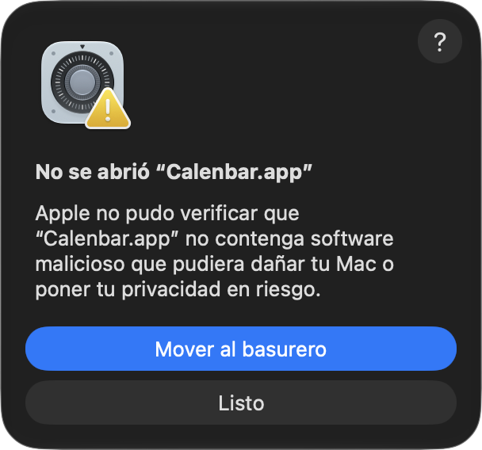

Install Calenbar
Two minutes, no account, nothing to configure. One command if you use Homebrew, or the usual download.
From the terminal
With Homebrew, one command installs it and skips steps 1 and 2:
brew install --cask hercase/calenbar/calenbar --no-quarantine- Homebrew asks you to trust the tap the first time. Say yes.
--no-quarantineis what skips the Open Anyway step. Leave it out and step 2 applies as usual.- Afterwards Calenbar updates itself; no
brew upgradeneeded. Continue at step 3.
Or download the app
The usual way: open the disk image and drag Calenbar to Applications. The four steps below walk you through it.
Download Calenbar.dmgAfter downloading: four steps
The second one looks scary and isn't: macOS says it the same way for every app that isn't registered with Apple.
1
Drag Calenbar to Applications
Open the downloaded Calenbar.dmg. Drag the Calenbar icon onto the Applications folder, then open Calenbar from Applications or with Spotlight.

2
Tell macOS it's OK to open
The first time, macOS says “Calenbar” Not Opened and offers to move it to the Trash. Don't: click Done. Then open System Settings › Privacy & Security, scroll to the bottom and click Open Anyway; confirm with your password and open Calenbar again. Only once: updates install themselves.
3
Allow access to your calendars
Calenbar asks for full access to Calendars: that's how it reads your events, and they never leave your Mac. Then allow Notifications so it can warn you before a meeting.
4
Google Calendar or Outlook? Add the account once
Calenbar shows whatever your Mac's Calendar knows. In System Settings › Internet Accounts, add your Google or Exchange account with Calendars turned on. Already using the Calendar app with it? Nothing to do.
That's it. Calenbar lives in the top-right corner, starts with your Mac, and keeps itself current: when a new version is ready it shows Update available in its panel.
Instalar Calenbar
Dos minutos, sin cuenta, nada que configurar. Un comando si usás Homebrew, o la descarga de siempre.
Desde la terminal
Con Homebrew, un comando la instala y se saltea los pasos 1 y 2:
brew install --cask hercase/calenbar/calenbar --no-quarantine- La primera vez Homebrew pide confiar en el tap. Decí que sí.
--no-quarantinees lo que saltea el paso de Abrir de todas formas. Sin eso, el paso 2 aplica igual.- Después Calenbar se actualiza sola; no hace falta
brew upgrade. Seguí en el paso 3.
O descargá la app
Lo de siempre: abrí la imagen de disco y arrastrá Calenbar a Aplicaciones. Los cuatro pasos de abajo te guían.
Descargar Calenbar.dmgDespués de descargar: cuatro pasos
El segundo asusta y no es para tanto: macOS lo dice igual para toda app que no está registrada en Apple.
1
Arrastrá Calenbar a Aplicaciones
Abrí el archivo descargado Calenbar.dmg. Arrastrá el ícono de Calenbar sobre la carpeta Aplicaciones y después abrí Calenbar desde Aplicaciones o con Spotlight.
2
Decile a macOS que está bien abrirla
La primera vez macOS dice No se abrió “Calenbar” y te ofrece moverla al basurero. No lo hagas: tocá Listo. Después abrí Ajustes del Sistema › Privacidad y seguridad, bajá hasta el final y tocá Abrir de todas formas (o Abrir igualmente, según el idioma del sistema); confirmá con tu contraseña y volvé a abrir Calenbar. Una sola vez: las actualizaciones se instalan solas.

3
Permitile acceder a tus calendarios
Calenbar pide acceso completo a Calendarios: así lee tus eventos, que nunca salen de tu Mac. Después permití las Notificaciones para que te avise antes de cada reunión.
4
¿Google Calendar u Outlook? Agregá la cuenta una vez
Calenbar muestra lo que conoce el Calendario de tu Mac. En Ajustes del Sistema › Cuentas de Internet, agregá tu cuenta de Google o Exchange con Calendarios activado. Si ya usás la app Calendario con esa cuenta, no hay nada que hacer.
Listo. Calenbar vive arriba a la derecha, arranca con tu Mac y se mantiene al día: cuando hay una versión nueva, el panel muestra Actualización disponible.